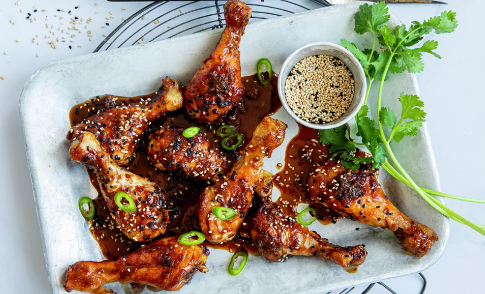

antall porsjoner:
1. Bland sammen soyasaus, sesamolje, honning, sukker, riseddik, limesaft, revet hvitløk og revet ingefær i en liten skål.
2. Ha kyllingklubbene i en dobbel pose, og hell på marinaden. Vend litt rundt på posen slik at marinaden fordeler seg jevnt.
3. Knyt igjen posen og la klubbene marinere minst 30 minutter, gjerne lengre.
4. Ha klubbene med marinaden i en ildfast form om du skal steke i ovnen, eller en aluminiumsform om du skal grille.
5. Sett formen i ovnen på 200 °C, eller på grillen, og stek klubbene i 30-35 minutter. Vil du ha ekstra grillstriper på dem kan du brune dem litt direkte på grillen først, og deretter legge dem tilbake i formen med marinaden. Litt mer grisete, men gir mer grillsmak.
6. Snu dem ofte, slik at de ikke brenner seg i formen. Og bruk gjerne en pensel for å pensle over marinaden fra formen under grillingen. Dersom marinaden begynner å svi seg i formen, tilsett litt vann.
7. Anrett kyllingklubbene på fat, drypp over kjøttsaften fra grillingen og pynt med koriander, grønn chili i skiver og sesamfrø.
Server retten som en del av et tapasbord eller som en egen rett med kokt ris, friske grønnsaker og kimchi.